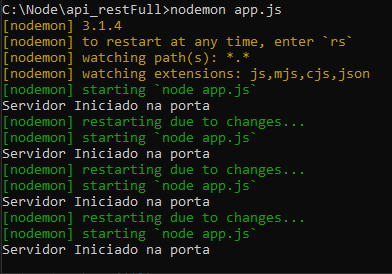

Aula 2 - Configuração inicial do Projeto
Nesta aula, vamos configurar o ambiente de desenvolvimento para o projeto e criar a primeira requisição
Node Js
-
Abra o terminal Node.js command prompt para criar o projeto em seu computador.
-
Navegue até a pasta onde deseja criar o projeto. Para isso utilize os comandos "cd + o nome do
diretório"
para acessar a o diretório desejado, e "cd.." para sair do diretório.
Em meu caso ao abrir o node ele apresenta o seguinte caminho: C:\Users\nelci e eu quero criar meu projeto dentro de C:\Node.
Para isso eu devo sair do diretório nelci e posteriormente sair do diretório Users com o seguinte comandocd..e novamentecd..pois o diretório Node está na raiz do disco C: - Após estar exatamente na raiz do disco C: execute o comando mkdir para criar o diretório Node e em seguida acesse-o com o comandocd Node. Veja os comandos na imagem abaixo:
Após acessar o diretório Node, crie um novo diretório com o comandomkdir api_restFulle acesse este diretório com o comandocd api_restFull
-
Agora vamos criar o projeto. Para
isso execute o comando
npm init -y. Este comando cria o arquivo package.json com as configurações padrão.
-
Após criar o projeto, vamos instalar o express. O express é um framework para Node.js que fornece
recursos mínimos para construção de servidores web.
Para instalar o express execute o comando
npm install express
-
Após instalar o express, vamos instalar o nodemon. O nodemon é uma ferramenta que ajuda a
desenvolver
aplicativos baseados em node.js reiniciando automaticamente a aplicação quando houver alterações no
código fonte.
Para instalar o nodemon execute o comando
npm install nodemon -g
Visual Studio Code
- Abra o Visual Studio Code e clique em File > Add Folder to Workspace para abrir o projeto criado.
- Selecione a pasta do projeto e clique em add .
-
Após adicionar, abra o arquivo package.json e visualize a estrutura do projeto no Visual Studio
Code.

-
Crie um novo arquivo chamado app.js e adicione o seguinte código:
const express = require('express'); const app = express(); const port = 4000;
app.get('/', (req, res) => { res.send('Rota Inicial do Projeto'); });
app.listen(port, () => { console.log('Servidor Iniciado na porta'); });
-
Essa codificação possui 3 partes:
-
const express = require('express'); - Importa o módulo express.
const app = express(); - Cria uma instância do express.
const port = 4000; - Define a porta que o servidor irá escutar. - app.get('/', (req, res) => { res.send('Rota Inicial do Projeto'); }); - Cria uma rota que responde a requisições GET na raiz do projeto.
- app.listen(port, () => { console.log('Servidor Iniciado na porta'); }); - Inicia o servidor na porta definida.
Node Js Command Prompt-
Abra o terminal Node js Command Prompt, navegue até a pasta do projeto e execute o comando
nodemon app.js
para iniciar o servidor.

Node Js Command Prompt-
Abra o navegador e acesse o endereço http://localhost:4000 para visualizar a
mensagem
Rota Inicial do Projeto .
Pronto! Projeto criado e configurado com a primeira requisição do tipo GET.
-
const express = require('express'); - Importa o módulo express.